The FlyMine Homepage
The basics
The FlyMine home page provides starting points to the different
ways in which data can be accessed, queried and manipulated. The
toolbar is repeated on every page to make navigation
through all these options more easy:
![[begin]](home_toolbar.png)
Have a look at our tips to find out more about FlyMine:
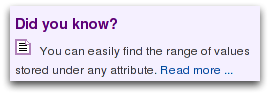
Accessing data
There are four ways to query or access the data in FlyMine, all can be directly accessed from the homepage (or from the toolbar on every FlyMine page):
1. Search - allows you to browse all the available data
for one particular object. Type in any identifier to see a report
page. You can also use the Search box to quickly find a template or
list. However, the Lists and Templates pages provide
more advanced search options!
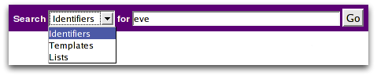
2. Templates - are predefined queries that allow you to
quickly and easily run a query. There are currently more than 150
templates. You can also make them yourself with the
QueryBuilder, or, we can make them for you - it only takes a
few minutes - so if you have a wish, let us know!
![[begin]](home_templates.png)
3. Lists - allows you to view and analyse lists and run
queries on the entire list in one go. There are some public lists available or you can make your own lists!
![[begin]](home_lists.png)
4. Query Builder - allows you to build you own custom query
![[begin]](home_QB.png)
Finally, different data types (called data categories) are
listed to give an immediate overview of what FlyMine has to
offer! The icons will bring you to the resepective data category
pages.
![[begin]](home_data.png)
Templates
The basics
This page shows all public templates, as well as your own (marked
with 'my') - if you are logged in. Templates are predefined queries,
each has a simple form and a description. Clicking on a template will
display the template form allowing you to run or edit the query.
We can add templates to this page at any time - it only takes a few
minutes - so if you have a suggestion, let us know!
Searching Templates
You can search templates by keywords (eg gene, orthologue,
FlyAtlas). By default, templates from all data categories will be
searched. Optionally, you can restrict your search to a certain data
type. If you are logged in, public templates as well as your own
templates will be searched, by default.
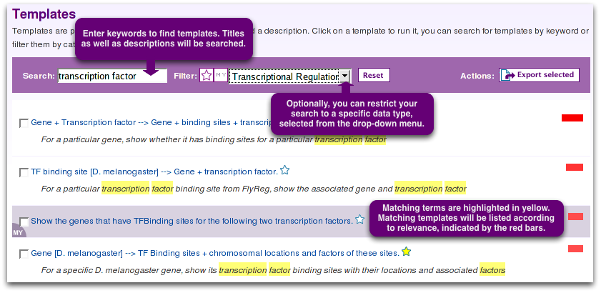
In the example below, only 'My templates' will be searched (not the public ones), and only templates that I have marked as 'My Favourites'.
Lists
Upload
FlyMine can operate on lists of data. Lists can then be analysed
on a list analysis page, or can be used in (template) queries. The
Upload page allows you to create a list yourself. The list can contain
a mix of identifier types (eg symbols, names, organism database id,)
but it cannot contain different object types (eg a list of genes and
proteins is currently not possible).
To create a list, follow these steps:
![[Lists]](lists_upload.png)
Note that the identifiers must be separated by commas (or by lines), eg:
eve, zen, Enhancer of zeste, CG32211
not:
eve zen Enhancer of zeste CG32211
View
The View page shows all public lists (name starting with 'PL'), as
well as your own (marked with 'my') - if you are logged in. Clicking
on a List name will show the List analysis page for this list.
We can add new public lists at any time - it only takes a few
minutes - so if you have a suggestion, let us know!
![[Lists]](lists_view.png)
You can merge lists, subtract lists and find common members between lists.
As an example, an subtraction of 2 lists is shown:
![[Lists]](lists_subtract1.png)
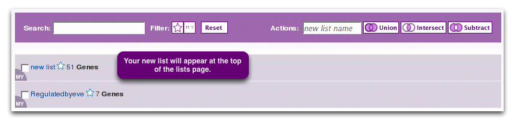
QueryBuilder
The basics
Advanced users can use a flexible query interface to construct
their own data mining queries. This page gives access to the QueryBuilder.
![[QueryBuilder page]](querybuilder_select.png)
A set of actions allows you to browse the full FlyMine data model,
import a query you or someone else has previously saved as XML or view
all of your saved queries in your MyMine account.
![[QueryBuilder page]](querybuilder_actions.png)
All the queries you have run during this session are also listed
on this page under 'Query History'. Your Query History can also be found
under MyMine.
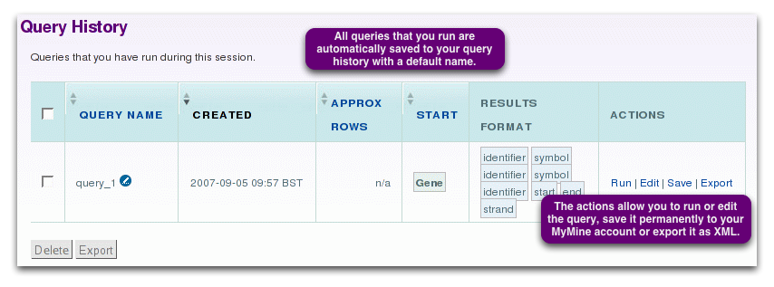
Data
The basics
The Data page gives an overview of all the data in FlyMine as well
as their source. To provide a better overview, FlyMine groups data
together in 'data categories'. The icons (or their title) will
bring you to the corresponding data category page, where you can run a
predefined template query, build your own query , and have access to
bulk download. Certain template queries, as well as the QueryBuilder
itself, allow you to perform searches that span more than one data
category.
MyMine
The basics
You can create a MyMine account by logging-in to FlyMine. (You only
need to provide an email address and a password to generate an
account, there is no other information required.). Creating a myMine
account allows you to permanently save lists, queries and templates - the MyMine
pages allow you to manage these. Your saved data is always private.
Lists
The lists tab shows all your permanently saved lists and any lists
you have made this session if you are not logged in. If you are
logged in, or if you log-in during a session, any lists you have made
will automatically be permanently saved. You can change the name
of a list, delete lists and perform logical operations on lists on
this page.
![[Mymine Page]](MyMine_lists.png)
Query History
All queries that you run are saved in your Query History with the
default name 'query_x' (where x increments for each query run). These
queries will only be saved during the time of the current session. To
save queries permanently and to import queries, you need to be
logged-in. Exporting and saving a query will will not delete it from
your query history during that session.
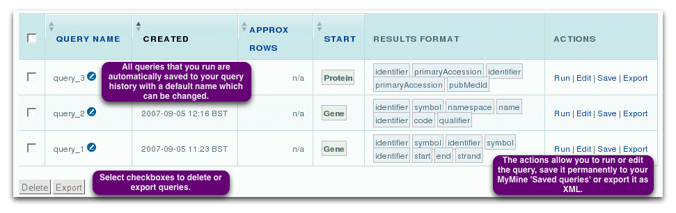
Saved Queries
This page lists all queries that you have saved before. They will
be saved permanently. If you import a query with a name identical to
an existing query it will get an automatic extension to make it
unique, e.g. dmel-proteins-1, dmel-proteins-2.
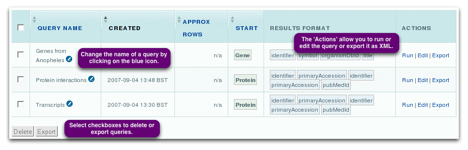
Saved Templates
The 'Saved Templates' page provides a list of all templates that
you created yourself or have imported. They will be saved
permanently. If you import a template query with a name identical to
an existing query it will get an automatic extension to make it unique,
e.g. dmel-proteins-1, dmel-proteins-2.
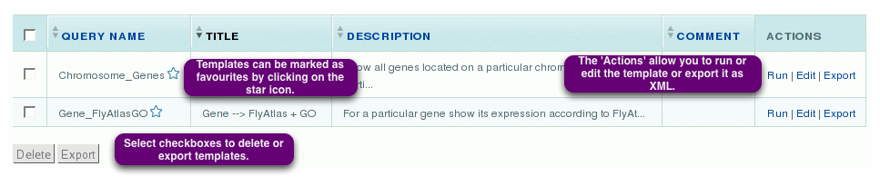
Change Password
This page allows you to change your FlyMine password.
Data Category Page
The basics
The FlyMine website presents the principle data types grouped
together as different 'data categories', such as protein interactions or gene
expression.
As an example, 'the transcriptional regulation' category is shown.
Each data category page lists:
1. Current data - background information on the origin of particular source datasets
2. Bulk download - access to convenient derivative bulk datasets for browsing or export in standard format:
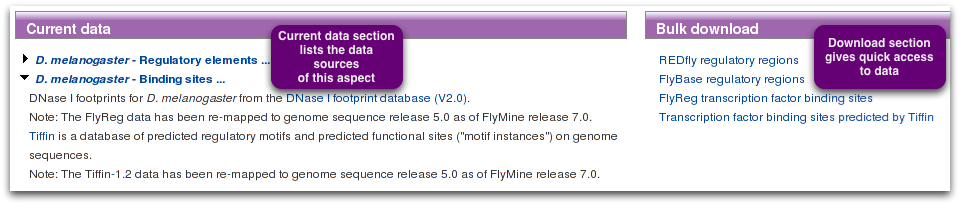
3. Relevant predefined template queries:
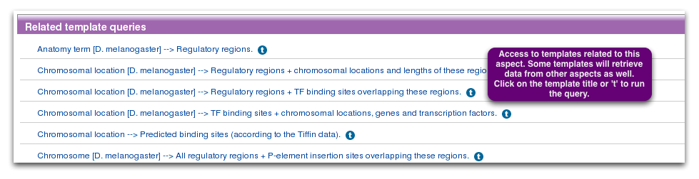
4. Query starting points - classes for use as starting points in the Query Builder:
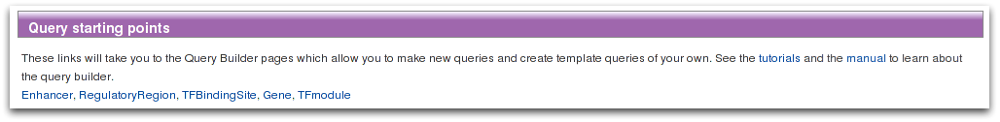
Report Page
The basics
For every object in the FlyMine database there is a report page
which provides all the data that Flymine has available for that object
along with additional information such as the GBrowse genome viewer
for sequence features.
All report pages have the same basic structure: The top part
provides summary information for every object, whereas the lower part,
Further Information by category has more detailed information
divided into different data types or categories
As an example the report page for the even-skipped gene is shown.
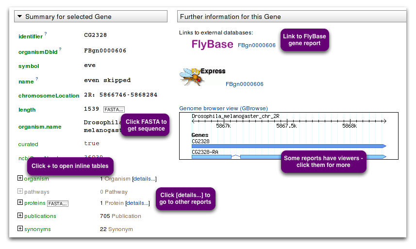
Template queries are run for this object when the page is loaded. We
can add templates to this page at any time - it only takes a few
minutes - so if you have a suggestion, let us know.
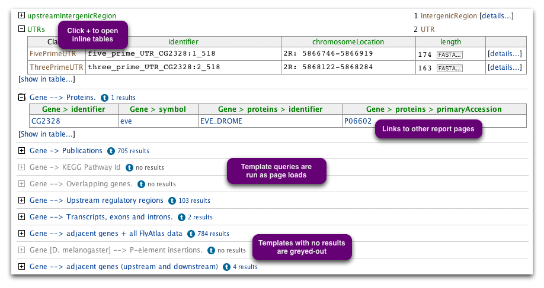
The Template Form
The basics
As an example, the form is shown for the template 'Gene -->
Orthologues + GO terms of these orthologues'. This template takes a
particular gene as input and searches for orthologues that have GO
annotation.
You can leave the box with the default value shown or you can enter
any identifier and FlyMine will try to find the right gene. For
example, for the D. melanogaster gene zen you can enter 'zen',
'CG1046', 'FBgn0004053', 'zerknullt' or any synonym. You can even
enter a transcript (CG1046-RA) or protein (ZEN1_DROME) identifier and
FlyMine will convert it for you. Alternatively, you can leave the
default value.
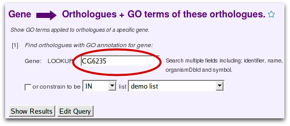
OR
Any variable (box) in a template query can be constrained to a list
(or 'not in' a list) rather than to a single value, provided you have a
list of the correct type saved in 'MyMine'. To constrain a query to a
list, select the checkbox underneath the variable box and choose the
list from the drop-down list.
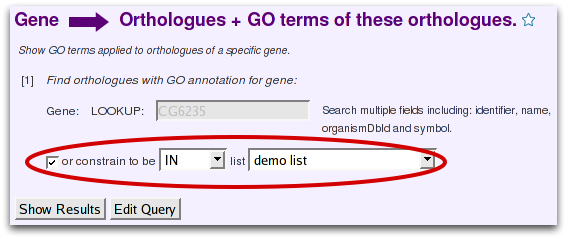
![[Template form]](templform_showresults.png) |
will take you directly to the results page. |
| 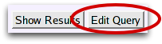 |
will display the template query in the FlyMine Query Builder. Here you can change the output of the query or add a filter to build a different query. |
Results Page
The basics
The results for the template 'Gene --> Orthologues + GO
terms of these orthologues' shows the starting gene, orthologous
genes and organism names with details of each GO term applied to
the orthologous genes. Orthologue data in FlyMine come from InParanoid. Note that
'main' means the best hit in the other organism, 'secondary'
denotes paralogues of the best hit.
![[Results Page]](results.png)
Summary buttons ![[icon]](sigma.png) at the top of each column allow you to view some
summary statistics. For names and identifiers it will tell you about
unique values, numerical data gives the min, max, mean and standard
deviation. In case of the example abobe, the summary button for the
column 'Orthologue > GO annotation > name' shows you the most commonly
occurring GO terms applied to orthologues of the original gene. (Note:
it only shows the first 10 rows of summary).
at the top of each column allow you to view some
summary statistics. For names and identifiers it will tell you about
unique values, numerical data gives the min, max, mean and standard
deviation. In case of the example abobe, the summary button for the
column 'Orthologue > GO annotation > name' shows you the most commonly
occurring GO terms applied to orthologues of the original gene. (Note:
it only shows the first 10 rows of summary).
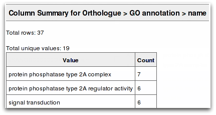
Exporting and saving results
- All results pages have a number of export options:
![[Results Page]](results_export.png)
Currently, either the entire results table or specific columns can be
exported. If nothing is selected, the entire data set will be
exported. If you do not wish to export certain columns these can be
hidden using the small double arrow in the column header.
![[Results Page]](results_select_export.png)
If the results table contains a column with objects that have a
nucleotide or amino acid sequence, it is possible to export all
sequences from that column in FASTA format. Currently, the FASTA
export option will export the sequences belonging to objects in the
first visible (i.e. not hidden) column only. Columns can be moved to
the first position by using the arrows in the header. If objects
appear more than once in the column, the sequence will only be
exported once.
- Results pages also allow you to save your data to a new list or
add them to an existing list:
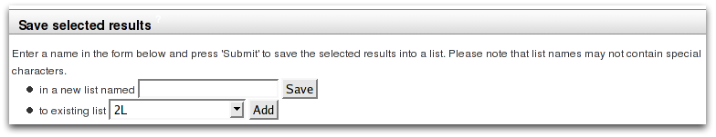
Select the required data and either add it to an existing list or
save it to a new list. Selecting the check boxes next to the column
headings will select the entire column for saving. Alternatively,
individual items can be saved by selecting check-boxes next to the
items. Currently, a list can only contain one column. However, if you
have multiple columns for the same item (eg a column for gene
identifier and one for gene symbol), all related columns become
highlighted when you select the checkbox next to one. This is because
you are saving the actual item (eg the gene) to a list, not just the
identifier.
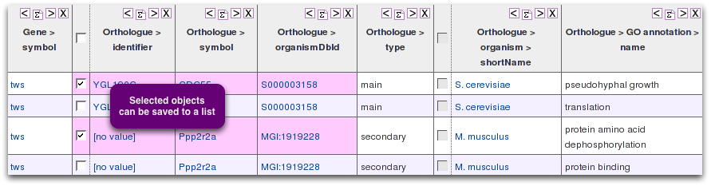
Changing the output
To change the output of the results table, click on 'query' at the top of the results page:
![[Results Page]](results_trail.png)
.
This will display the template form again, and
|
will display the template query in the FlyMine Query Builder. |
List Analysis Page
The basics
A list analysis page provides the following information:
1. List contents: A table summarising the contents of your
list. Only up to ten items are shown. You can enter a description for
your list, which might be useful if you want to use your list again at
a later point. A set of actions allow you to use and export your list.
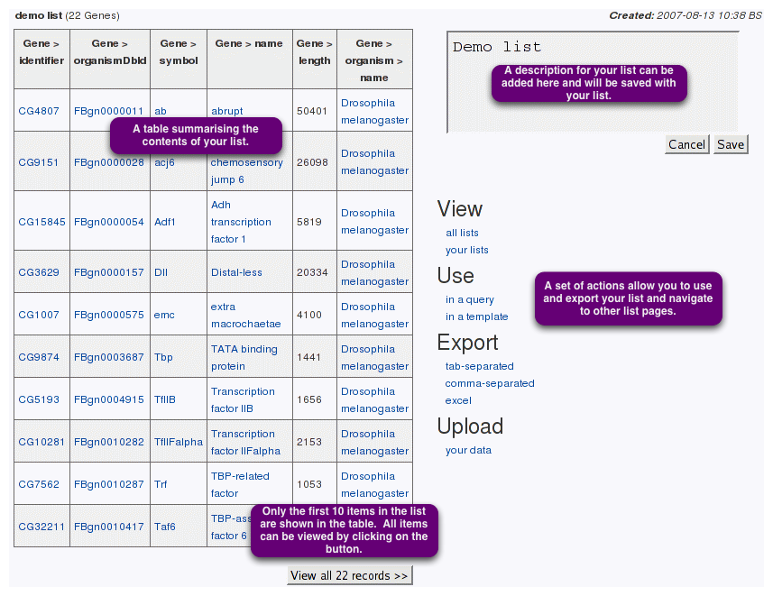
2. Widgets: Widgets provide additional information about the
contents of your list. Widgets are currently only available for lists
of genes. The types of data shown through widgets will increase in
future releases of FlyMine.
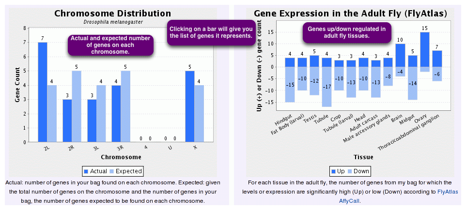
3. Templates: A set of template queries which have been
automatically run on all the items in your list.
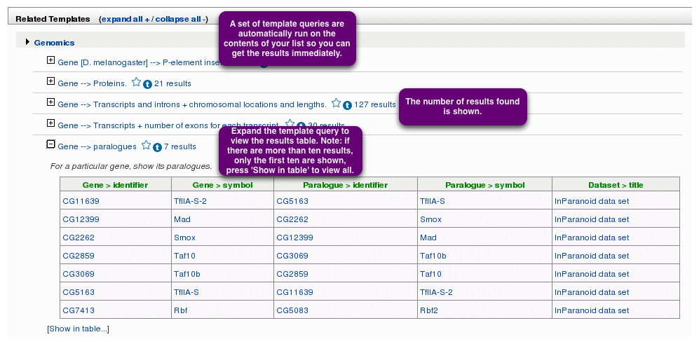
List Confirm Page
The basics
The list that you upload is checked against the FlyMine database to
ensure that everything in your list can be found in FlyMine.
In the example below, only 22 out of 28 items were immediately recognized and added to the new list:
![[List Confirm Page]](listconfirm_summary.png)
Any discrepancies are reported as follows:
1. Low quality matches: These are items in your list that do not
match a key (main) identifier in FlyMine but were found as
synonyms. This may mean you have a secondary (old) identifier or are
using a gene symbol that is not the official symbol for that gene. If
you are happy that the item identified is the correct one, you can add
it to your list by clicking on 'Add' in the last column.
2. Duplicates: These are items in your list that match more than
one entry in the database.
3. Converted types: These are items in your list that matched
something in FlyMine, but not of the type you selected. (For example,
if you selected type=gene, but had a protein identifier in your
list). FlyMine can convert these into the type you selected so that
you can add the item to your list - click on 'Add' in the last column.
4. Unresolved identifiers: These are items in your list that were
either not found in FlyMine, could not be converted to the type you
selected or matched objects from an organism other than the one you
selected.
An example of 'Duplicate items' is shown below.
![[List Confirm Page]](listconfirm_duplicates.png)
You can go over the list of 'Additional matches' and decide which
one you want to include in your list. Alternatively, you can select
all of them at once as follows:
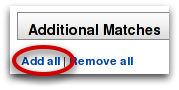
You can then give a name for your new list and click save:
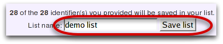
This will save your list in MyMine and take you to the corresponding List Analysis Page for this new list.
QueryBuilder Page
The basics
The Query Builder allows you to construct your own custom queries or edit a template query. It consists of the following sections:
1. The Model Browser: Allows you to browse the FlyMine data model and select the data you wish to query.
2. Query Summary: Shows the set of constraints (filters) you have applied to the data.
3. Constraint editor: Allows you to add and edit constraints.
4. Output columns: Shows the columns you have selected for your results table and allows you to select which column on which to sort the results.
5. Sort order: Shows which column is selected for sorting and allows you to change the sort direction.
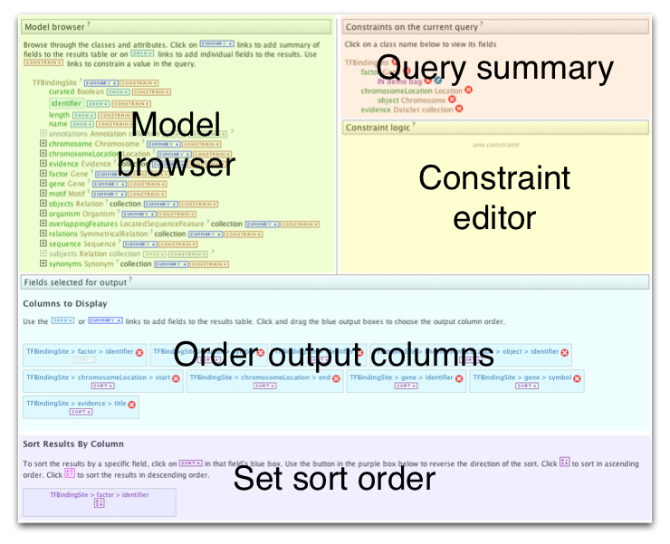
Model Browser
The model browser allows you to browse the FlyMine data model and select the data you wish to query. The browser displays an initial starting class, which in the example below is 'Gene'. If you are building a query from scratch you will have selected the initial starting class to start building your query. From this initial class it is possible to browse to related classes. Expanding a related class again shows classes related to that class and so on. For each class there is also a set of relevant fields, such as Gene symbol and Gene identifier. For each class and field there are two buttons:
1. Constrain: Allows you to allows you to add a constaint (filter) to that particular class or field.
2. Show: Allows you to add that field to your results table output.
![[QueryBuilder Page]](querybuilder_modelbrowser.png)
Constraints
Clicking on a constraint button in the model browser brings up a box on the left hand pane which allows you to define your constraint. If you are constraining a field the following constraint options will be available:
1. Filter query results on this field having a specific value: Allows you to constrain your query to a single value. An example would be constraining the Gene symbol field to 'Zen'.
shoe
2. Filter query results on the contents of your list: Allows you to constrain your query to a list of values. The list can be selected from the drop down list which will contain both 'public' lists and any lists you have created yourself.
2. Filter query results on this field having any value or not: Allows you to constrain this field to data which either must have a value for this field or do not have a value for this field.
![[QueryBuilder Page]](querybuilder_constrain.png)
Results output
Clicking on a show button next to a field in the model browser will
add that field to your 'Fields selected for output' list. This means
that data from that field will appear as a column in your results
table. You can change the order of the columns by picking up the box
and moving it. You can remove a column using the red cross. You can
select which column on which the results should be sorted by clicking
on 'sort' within the relevant box - the sort direction can then be set
from the sort box below. In the example below the results table will
contain three columns: Gene symbol, gene identifer and Go annotation
name. Each box shows the path taken in the model browser - eg Gene >
goAnnotation > name. However, usually just the last two parts of the
path (eg goAnnotation > name) are enough to show you what will be in
that column.
![[QueryBuilder Page]](querybuilder_resultsoutput.png)
The Data Model
The basics
The FlyMine data tree shows all the classes in FlyMine, some of
which do not yet have data associated with them. You can use this page
to browse the data structure in FlyMine and to select a starting class to make your query.
![[Tree page]](tree.png)
Import Queries
The basics
It is possible to import queries. The queries need to be in xml
format, as in the example below. You can import more than one query at
the same time by by
enclosing them in the xml tags <queries></queries>.
- If you are not logged in, the query will automactically be displayed
in the QueryBuilder. You can save the query permanently when you're
logged in.
- If you are logged in, the query will automatically be saved to MyMine
under 'Saved Queries'.
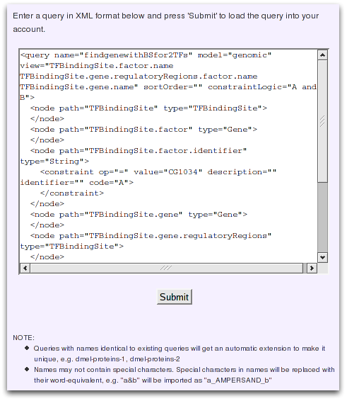
Import Template Query
The basics
It is possible to import templates, but only when you are logged
in. The templates need to be in xml format, as in the example
below. You can import more than one template at the same time by
enclosing them in the xml tags
<template-list></template-list>.
- The template will be saved to MyMine under 'Saved Templates'.
![[importTemplates]](importtemplate.png)